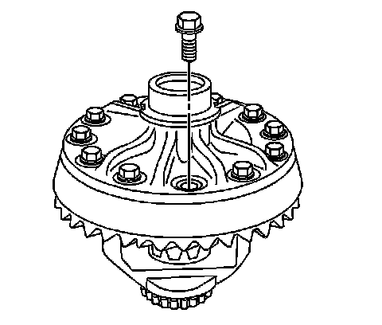

Differential Overhaul (8.6 Inch Axle)
Differential Overhaul (8.6 Inch Axle)
Disassembly Procedure
1. Remove the differential side bearings.

Important: The ring gear bolts have left-hand threads.
2. Remove the gear bolts. Discard the bolts.

Notice: Refer to Ring Gear Removal Notice.
3. Remove the ring gear from the differential case.
Drive the ring gear off with a brass drift if necessary.
4. Remove the differential pinion gears and the differential side gears by performing the following steps:
1. Remove the pinion shaft lock bolt.
2. Remove the pinion shaft.
3. Roll the differential pinion gears out of the case with the pinion gear thrust washers.
4. Remove the differential side gears and the side gear thrust washers.
Mark the pinion gears top and bottom and the differential side gears left and right.
Assembly Procedure
1. Lubricate the pinion and side gears using axle lubricant. Use the proper fluid. Refer to Fluid and Lubricant Recommendations.
2. Install the differential side gear thrust washers to the differential side gears.
3. Install the differential side gears and thrust washers into the differential case.
If the same differential side gears and the thrust washers are being used, install the gears and the thrust washers to their original locations.
4. Install the differential pinion gears and pinion gear thrust washers by performing the following steps:
1. Position one pinion gear between the differential side gears.
2. Position the second pinion gear between the differential side gears directly opposite the of the first gear.
3. Rotate the differential side gears until the pinion gears is directly opposite the opening in the differential case.
4. Install the thrust washers.
Rotate the pinion gears toward the differential opening in order to permit the sliding in of the thrust washers.
5. Install the pinion shaft.
Notice: Refer to Fastener Notice.
6. Install a new pinion shaft lock bolt.
Tighten the new pinion shaft lock bolt to 36 Nm (27 lb ft).
Important: The mating surface of the ring gear and the differential case must be clean and free of burrs before installing the ring gear.

7. Install the ring gear to the differential case.
Important: The ring gear bolts have left - hand threads.
8. Install the new ring gear bolts.
Hand start each bolt to ensure that the ring gear is properly installed to the differential case.
9. Tighten the ring gear bolts. Tighten the bolts alternately and in stages, gradually pulling the ring gear onto the differential case.
Tighten the ring gear bolts in sequence to 120 Nm (89 lb ft).
10. Install the differential side bearings.